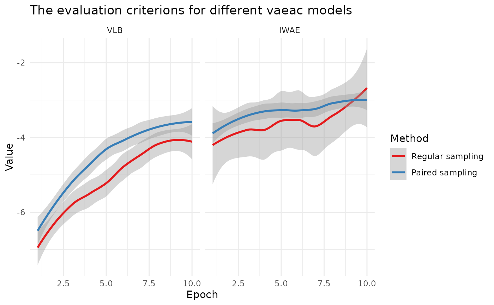

Plot the training VLB and validation IWAE for vaeac models
Source: R/approach_vaeac.R
plot_vaeac_eval_crit.RdThis function makes (ggplot2::ggplot()) figures of the training VLB and the validation IWAE for a list
of explain() objects with approach = "vaeac". See setup_approach() for more information about the
vaeac approach. Two figures are returned by the function. In the figure, each object in explanation_list gets
its own facet, while in the second figure, we plot the criteria in each facet for all objects.
Arguments
- explanation_list
A list of
explain()objects applied to the same data, model, andvaeacmust be the used approach. If the entries in the list is named, then the function use these names. Otherwise, it defaults to the approach names (with integer suffix for duplicates) for the explanation objects inexplanation_list.- plot_from_nth_epoch
Integer. If we are only plot the results form the nth epoch and so forth. The first epochs can be large in absolute value and make the rest of the plot difficult to interpret.
- plot_every_nth_epoch
Integer. If we are only to plot every nth epoch. Usefully to illustrate the overall trend, as there can be a lot of fluctuation and oscillation in the values between each epoch.
- criteria
Character vector. The possible options are "VLB", "IWAE", "IWAE_running". Default is the first two.
- plot_type
Character vector. The possible options are "method" and "criterion". Default is to plot both.
- facet_wrap_scales
String. Should the scales be fixed ("
fixed", the default), free ("free"), or free in one dimension ("free_x", "free_y").- facet_wrap_ncol
Integer. Number of columns in the facet wrap.
Value
Either a single ggplot2::ggplot() object or a list of ggplot2::ggplot() objects based on the
plot_type parameter.
Details
See Olsen et al. (2022) or the blog post for a summary of the VLB and IWAE.
Examples
# \donttest{
if (requireNamespace("xgboost", quietly = TRUE) &&
requireNamespace("torch", quietly = TRUE) &&
torch::torch_is_installed()) {
data("airquality")
data <- data.table::as.data.table(airquality)
data <- data[complete.cases(data), ]
x_var <- c("Solar.R", "Wind", "Temp", "Month")
y_var <- "Ozone"
ind_x_explain <- 1:6
x_train <- data[-ind_x_explain, ..x_var]
y_train <- data[-ind_x_explain, get(y_var)]
x_explain <- data[ind_x_explain, ..x_var]
# Fitting a basic xgboost model to the training data
model <- xgboost::xgboost(
data = as.matrix(x_train),
label = y_train,
nround = 100,
verbose = FALSE
)
# Specifying the phi_0, i.e. the expected prediction without any features
p0 <- mean(y_train)
# Train vaeac with and without paired sampling
explanation_paired <- explain(
model = model,
x_explain = x_explain,
x_train = x_train,
approach = "vaeac",
phi0 = p0,
n_MC_samples = 1, # As we are only interested in the training of the vaeac
vaeac.epochs = 10, # Should be higher in applications.
vaeac.n_vaeacs_initialize = 1,
vaeac.width = 16,
vaeac.depth = 2,
vaeac.extra_parameters = list(vaeac.paired_sampling = TRUE)
)
explanation_regular <- explain(
model = model,
x_explain = x_explain,
x_train = x_train,
approach = "vaeac",
phi0 = p0,
n_MC_samples = 1, # As we are only interested in the training of the vaeac
vaeac.epochs = 10, # Should be higher in applications.
vaeac.width = 16,
vaeac.depth = 2,
vaeac.n_vaeacs_initialize = 1,
vaeac.extra_parameters = list(vaeac.paired_sampling = FALSE)
)
# Collect the explanation objects in an named list
explanation_list <- list(
"Regular sampling" = explanation_regular,
"Paired sampling" = explanation_paired
)
# Call the function with the named list, will use the provided names
plot_vaeac_eval_crit(explanation_list = explanation_list)
# The function also works if we have only one method,
# but then one should only look at the method plot.
plot_vaeac_eval_crit(
explanation_list = explanation_list[2],
plot_type = "method"
)
# Can alter the plot
plot_vaeac_eval_crit(
explanation_list = explanation_list,
plot_from_nth_epoch = 2,
plot_every_nth_epoch = 2,
facet_wrap_scales = "free"
)
# If we only want the VLB
plot_vaeac_eval_crit(
explanation_list = explanation_list,
criteria = "VLB",
plot_type = "criterion"
)
# If we want only want the criterion version
tmp_fig_criterion <-
plot_vaeac_eval_crit(explanation_list = explanation_list, plot_type = "criterion")
# Since tmp_fig_criterion is a ggplot2 object, we can alter it
# by, e.g,. adding points or smooths with se bands
tmp_fig_criterion + ggplot2::geom_point(shape = "circle", size = 1, ggplot2::aes(col = Method))
tmp_fig_criterion$layers[[1]] <- NULL
tmp_fig_criterion + ggplot2::geom_smooth(method = "loess", formula = y ~ x, se = TRUE) +
ggplot2::scale_color_brewer(palette = "Set1") +
ggplot2::theme_minimal()
}
#>
#> ── Starting `shapr::explain()` at 2025-11-17 18:45:29 ──────────────────────────
#> ℹ Feature classes extracted from the model contain `NA`.
#> Assuming feature classes from the data are correct.
#> ℹ `max_n_coalitions` is `NULL` or larger than `2^n_features = 16`, and is
#> therefore set to `2^n_features = 16`.
#>
#> ── Explanation overview ──
#>
#> • Model class: <xgb.Booster>
#> • v(S) estimation class: Monte Carlo integration
#> • Approach: vaeac
#> • Procedure: Non-iterative
#> • Number of Monte Carlo integration samples: 1
#> • Number of feature-wise Shapley values: 4
#> • Number of observations to explain: 6
#> • Computations (temporary) saved at: /tmp/RtmpPyrEpN/shapr_obj_23d93802e2f2.rds
#>
#> ── Main computation started ──
#>
#> ℹ Using 16 of 16 coalitions.
#>
#> ── Starting `shapr::explain()` at 2025-11-17 18:45:41 ──────────────────────────
#> ℹ Feature classes extracted from the model contain `NA`.
#> Assuming feature classes from the data are correct.
#> ℹ `max_n_coalitions` is `NULL` or larger than `2^n_features = 16`, and is
#> therefore set to `2^n_features = 16`.
#>
#> ── Explanation overview ──
#>
#> • Model class: <xgb.Booster>
#> • v(S) estimation class: Monte Carlo integration
#> • Approach: vaeac
#> • Procedure: Non-iterative
#> • Number of Monte Carlo integration samples: 1
#> • Number of feature-wise Shapley values: 4
#> • Number of observations to explain: 6
#> • Computations (temporary) saved at: /tmp/RtmpPyrEpN/shapr_obj_23d97a30c8c0.rds
#>
#> ── Main computation started ──
#>
#> ℹ Using 16 of 16 coalitions.

# }